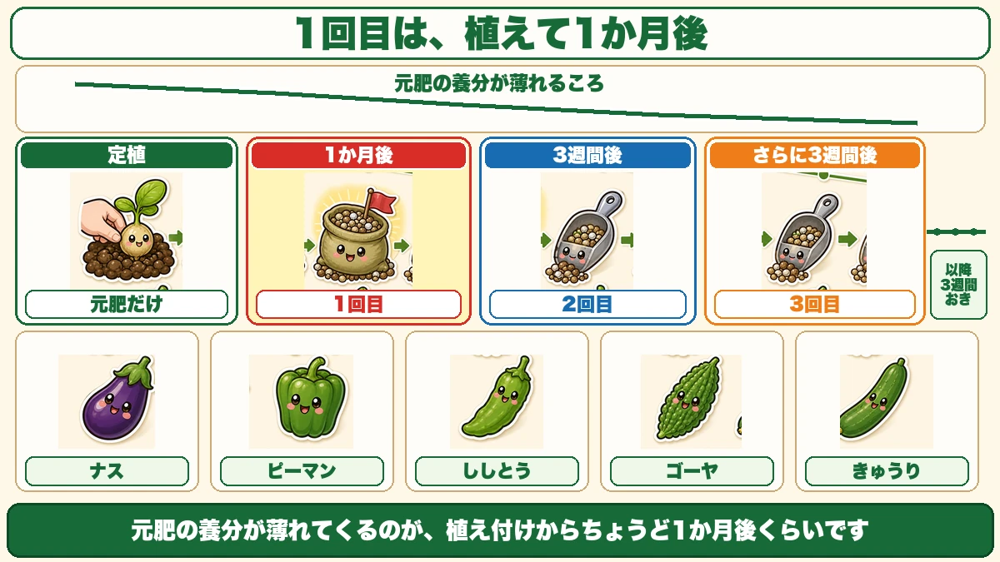
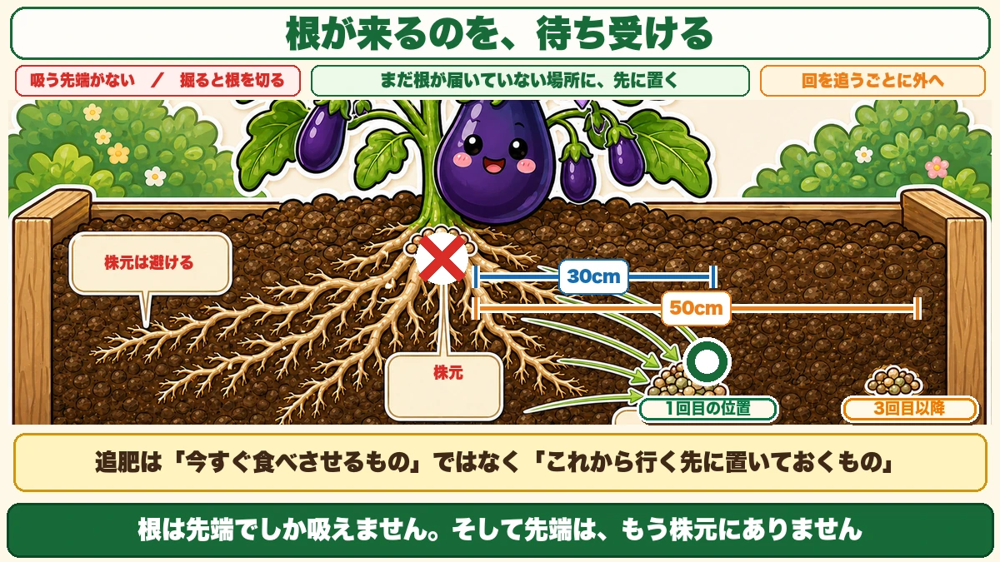
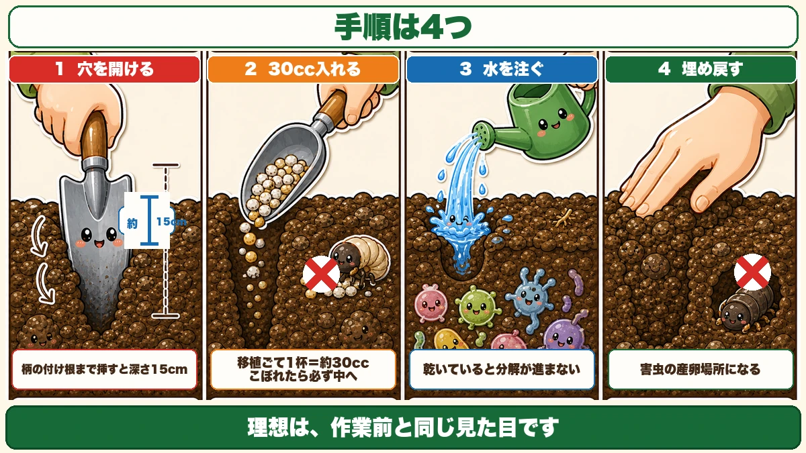

追肥の判断帳｜時期・置き場所・量と、追加しない見分け方
どうも、8150（えいこう）です🌱 家庭菜園歴8年、理科の教員免許を持っていて、有機・無農薬で野菜を育てています。
この記事で分かること
- 追肥の予定は『育てている野菜』『先に入れた肥料』『いまの生育』をそろえて決めます。日付だけでは判断しません。
- 夏野菜では植え付け約1か月後が確認の区切り。その後の間隔は2週間、3週間、月1回と説明が分かれます。
- 肥料を埋める場所は、根を傷めないことと、養分が根へ届くことを合わせて考えます。すべての方法で同じ距離にはなりません。
- 量は『何の肥料を、どの範囲に、何の単位で』まで確認。穴一つの量と一株の合計、ccとgを取り違えないようにします。
- 葉色が薄い、花が落ちる、伸びが悪いときは、土の水分や直前の作業も見ます。肥料を足す前に、原因を分けましょう。
- 冬越し野菜の止めどきと、収穫を続ける野菜の追肥は別の計画です。遅れた分をまとめて取り戻そうとしません。
追肥って、やる日も量も置き場所も気になる作業ですよね。「とりあえず追加しとこ」となる前に、その株にいま必要かを確認したいところです。予定表の穴を埋めるために、野菜へ肥料を入れるわけではありません☺️
どうも、8150（えいこう）です。家庭菜園士の資格と理科の教員免許を持っています。ここでは、追肥を調べるときに迷いやすい数字を整理し、作業と判断を分けてお話しします。
これから計画を立てるみなさんは『早見』から、今日作業するなら『作業の手順』から読んでください。すでに株の様子がおかしいときは『失敗の見分け方』が入口になります。読み切ってから畑へ行かなあかん、ということはないです。必要な章へ戻れるようにしてあります。
この記事の軸は、追肥を決める順番を『条件の確認→株の観察→必要な分だけ追加』にすること。数字はその判断を助ける目安として使います。
早見：追肥の判断と作業の数字
時期と間隔を確認する
- 夏野菜の初回：苗を植えて約1か月を目安に、生育と元肥の内容を確認します。植え付けから必ず同じ日に肥料がなくなる、という意味ではありません。
- 初回後の間隔：2週間に1回、3週間に1回、月1回という異なる説明があります。肥料の性質、土、株の伸び方を含む方法の違いです。
- 秋冬キャベツの初回：植え付け約3週間後に施す実演があります。夏野菜の約1か月と混ぜず、対象を分けて覚えます。
- 茎ブロッコリー：春までわき芽を収穫する方法では、約3週間ごとの追加が目安として示されています。量を増やして収穫を急がせる計画ではありません。
- 冬越し野菜：有機肥料の追加を1月中で終える説明と、品種や野菜によって2〜3月にも行う説明があります。ひとまとめに『冬はこの日で終了』とはできません。
- すでに収穫できる白菜・キャベツ：玉をさらに大きくするための追加を続けず、収穫へ進む判断をします。巻き始める前の管理とは区別してください。

図の約1か月・3週間という日程は、夏野菜の穴施肥を考えるときの一例です。違う肥料や冬越しの野菜へ、そのまま貼り付けないでください。カレンダーには『施す日』より先に『株を見る日』として印を入れると使いやすいです。
例えば、夏野菜を植えた日から約1か月の印を付けたら、当日は葉や茎、土の湿り、前に施した肥料を確認します。順調で、採用している栽培法でも追加を必要としないなら、確認だけで終わって構いません。「印があるのに作業せえへんの？」という日も、ちゃんと管理した日です☺️
距離と深さの目安を分ける
- 夏野菜の穴施肥：株の位置から約30cm離し、深さ約15cmの穴を作る実演があります。根を近くで掘り切らないための方法です。
- 秋冬キャベツの穴施肥：株から20〜30cm、深さ約10cmの実演があります。位置の事前説明は25〜30cmなので、説明には幅があります。
- 育った茎ブロッコリー：冬の大株では株元から約20cm以上離す説明があります。この野菜・生育段階での目安です。
- 回数を重ねる夏野菜：株の近くだけに穴を増やさず、根の広がりを考えて、うねの肩や外側の作業へ切り替える方法があります。
- 肩を開ける約50cm：マルチの肩部分を開く長さの話です。株と施肥場所の距離を50cmにそろえる指定ではありません。
測る出発点は、見えている株の位置です。地中の根の先端を探して、そこからさらに30cm測る作業ではありません。根は見えないので、株の大きさやうねの範囲から傷めにくい場所を考えます。
根を避けるために離すことと、どこまでも遠くに置くことも違います。離した結果、根へ届かない場所になれば目的から外れます。穴を掘る方法なのか、根の広がる範囲へ施す方法なのかを先に決めてください。
量は単位と対象範囲をセットで見る
- cc：体積、つまり容器に入るかさを示します。
- g：重さを示します。同じかさでも肥料が違えば重さは変わります。
- 一穴当たり：一つの穴へ入れる量。反対側にも施すなら、その分を含めて一株の合計を確認します。
- 一株当たり：その株に使う総量。穴一つずつへ同じ総量を入れないようにします。
- 1㎡当たり：土の面積に対する量です。株数への換算には、その面積に何株あるかの確認も必要です。
夏野菜の実演に出てくる約30cc、トマトの約20ccという容量は、その人が使った肥料での量です。ここでは一般の肥料へ使う確定量にしません。肥料の種類や濃度もそろっていないため、その数字だけで手元の商品を量らないでください。
秋冬キャベツには一穴約10ccの実演もあります。同じ穴施肥でも量が違うことを知るための例です。『夏野菜の30cc』『キャベツの10cc』から、すべての野菜の分量表を作ることはできません。
手元の肥料の表示がgなら重さで、ccなら容量で量ります。移植ごて一杯、大きなスプーン一杯、ひと握りという説明は、実演で使った道具や手に依存します。みなさんの移植ごてが同じ大きさとは限らないんですよね。
このテーマで決められない数字
追肥は野菜に共通する作業ですが、種まきの適期、株間、うね幅、収穫までの日数、連作の間隔は作物ごとに違います。このページから一つの共通値は出しません。育てる野菜の栽培計画へ、追肥の判断を組み合わせてください。
- 野菜名と、早生・晩生などの違いが分かる
- 元肥を入れた日と量を確認できる
- 肥料の表示にある単位と対象範囲を読んだ
- 数字の目安が、畑かプランターかを確認した
- 次の確認日と、収穫を終える見込みを分けて考えた
分量を決める前にこの項目をそろえると、あとで別の説明を見つけても比較しやすくなります。数字を増やして覚えるより、数字が使える条件を残す方が役に立ちます。
作業の手順（時期の順）
1．植える前に、元肥と追肥を別々に計画する
- 育てる野菜と収穫したい時期を決め、畑の前作と、すでに入っている肥料を確認します。
- 元肥で生育を支える方法か、途中で補う方法かを選びます。異なる方法の量と回数を重ねないようにしてください。
- 肥料の表示から、対象野菜、使用量、施し方を読みます。資材の名前が似ていても、同じ濃度とは限りません。
- 種まき日、植え付け日、元肥を施した日を別々に記録します。次の確認日は、採用する方法に合わせて予定に入れます。
元肥は栽培開始の準備、追肥は栽培途中の補給です。植える前に土へ入れて待つ期間と、植えてから次の追加までの間隔は、別の時間なんですよね。ここを同じ『1か月』として覚えると、スタート地点がずれます。
ゆっくり効く肥料を前もって入れ、途中の追加を少なくする方法もあります。反対に、最初から全部を入れず、生育を見て補う方法もあります。どちらかの元肥に、もう一方の追肥予定を上乗せすると、予定した量を超えることがあります。
2．初回の確認日に、株と土を観察する
- 植えた日と現在の日付を確かめ、夏野菜なら約1か月、秋冬キャベツの該当する方法なら約3週間という確認の区切りを見ます。
- 同じ株の新しい葉、茎の伸び、花や実の状態を観察します。葉色一つだけを切り取らないようにします。
- 土が乾いているか、湿った状態が続いているかを確かめます。株が伸びない原因を、すぐ栄養不足と決めません。
- 元肥と前回の追加の内容を見直し、『今行う』『条件を整えてから考える』『今回は追加しない』を選びます。
葉が薄い色でも、直前に肥料を入れたばかりなら、もう一度足す前に効き方を確認します。有機肥料の働きが遅い時期には、入れた量と見えている反応の間に時間差があります。「まだ変わらへん」と同じ量を重ねると、あとから効き方が重なるわけです。
観察にはスマートフォンの写真も使えます。株全体と、葉や茎の気になるところを残し、いつの写真か分かるようにします。別の株同士を比べるだけでなく、同じ株がどう変わったかを見る記録にしてください。
3．穴施肥を選ぶ場合、根を傷めにくい位置を決める
- 株の位置とうねの端、マルチの肩を確認します。植え付け穴のすぐ横を深く掘る段取りは避けます。
- 夏野菜の実演では約30cm離した位置が目安です。秋冬キャベツや茎ブロッコリーは、それぞれの方法と株の大きさに合わせます。
- 前に穴を開けた位置を確認し、同じところへ何度も集中させないよう、今回の場所を決めます。
- 道具が入る範囲を確認し、穴を開けます。深さは道具の名前で決めず、刃の実際の長さを見てください。

この図の位置は、夏野菜へ穴を作る方法の目安として見ます。どんな根も同じ円で広がり、30cmの外側には一本もない、という意味ではありません。道具を入れて根に当たるようなら、力任せに押し込まず、作業位置を見直します。
移植ごてや棒を使う方法があります。実演には折れた支柱の利用も出てきますが、手元の道具で小さな穴を開けられればよく、同じ道具を買いそろえる必要はありません。マルチを広く破らず、後で戻せる開け方にしておきます。
4．量を確かめて入れ、こぼれた分を残さない
- 使う肥料の表示と、選んだ栽培法の分量を確認します。対象が一穴、一株、面積のどれかを先に読みます。
- 表示が重さなら量って取り分けます。容量指定なら、容量の分かる道具を使います。
- 必要な分を穴へ入れます。肥料の種類が確認できない実演の容量を、そのまま別の商品へ使わないでください。
- 周囲へこぼれたものがあれば、穴の中へ戻します。追加する予定のない場所へ、ついでに散らして終わらないようにします。
一か所の量が分かっていても、作った穴の数が増えれば、一株への合計は増えます。反対側にも施す方法では、両側を合わせて記録してください。肥料の袋に『一株当たり』とある場合は、その総量を穴の数で分けるのかも確認します。
手で握る量は、人によって変わります。慣れるまでは、何をどれだけ入れたか分かる量り方を選ぶと安心です。ここでの計量は、細かい作業が好きな人だけのものではありません。後から「今回多かったかな」を判断するための手がかりになります。
5．水分を確認し、穴とマルチを戻す
- 穴へ肥料を入れる方法では、分解に必要な水分を補う手順が示されています。まず土の湿り具合を見ます。
- 水を加える場合は、その穴へ注ぎます。すでに湿り続けている土に、理由なく水分を重ねないようにします。
- 土を戻して開口をふさぎます。穴を残したまま、次の株へ移らないようにしてください。
- マルチを開けた場合は元の位置に戻し、肩も留め直します。最後に周辺の肥料のこぼれを確認します。

図の作業順は、穴へ施す場合の確認に使えます。図にある容量は、どの肥料にも共通する量ではありません。順番は図で確かめ、量は手元の肥料と栽培条件で確かめる、と役割を分けてください。
穴を閉じることは、風が入り続けたり、虫が入り込んだりする開口を減らすための仕上げです。閉じれば虫が来なくなる保証はありませんが、せっかく戻せるところを開けっぱなしにする必要もありません。肥料を入れるまでで終わらず、片付けまでを追肥に含めます。
6．次の確認日を決め、場所と量を記録する
- 作業日、野菜名、肥料、量、施した場所を記録します。穴ごとの量なら穴数も書きます。
- 選んだ方法の間隔を目安に、次の確認日を予定します。2週間・3週間・月1回を混ぜて、最も短い間隔だけ採用しないようにします。
- 次回は前回の記録と株の変化を見比べます。増やす、続ける、休むの判断を、その場の印象だけで決めません。
- 生育が進み、根が広がったと考えられる段階では、株の近くだけに穴を作り続けず、うねの肩などへ作業場所を見直します。
記録は長い日記でなくて大丈夫です。『日付／株／肥料／量／場所／葉と花の様子』が分かれば十分。袋の写真を残すと、次に同じ肥料を使うときにも内容を確認できます。
うねの肩を開く方法では、約50cmは開口の長さの例です。株からの距離を毎回50cmに変える指示ではありません。肩を開くときも、既にそこまで根が来ている可能性を考え、深く掘り返す作業とは分けます。
7．トマトと冬越し野菜は、終了まで見通して決める
- トマトは他の夏野菜と同じ予定を自動で適用せず、初期の茎葉の勢い、花、実の付き方を見ます。
- 冬越し野菜は、品種と収穫時期、肥料が効くまでの時間を確認します。作業日だけでなく、いつ効かせたいかを考えます。
- 予定から遅れた場合は、過去の不足を想像して増量せず、現在の段階から追加の必要性を見直します。
- 白菜やキャベツが収穫できる状態なら、もう一度大きくするための追肥より、収穫する予定を立てます。
わき芽を順に収穫する茎ブロッコリーと、玉を完成させて収穫する白菜では、終盤の仕事が違います。『冬の野菜だから同じ』とせず、何をこれから育てるのかを見てください。追加を終える判断も、追肥管理の一部です。
失敗の見分け方（症状→原因→やること）
葉色が薄く、株の伸びも弱い
- 症状：葉が黄緑寄りに見える、茎が細い、新しい生育が弱いなどの変化があります。
- 考えられる原因：栄養が足りていない可能性があります。ただし、土の水分や根の状態を見ずに、肥料不足だけへ絞れません。
- やること：いつから変化したか、元肥と追加の履歴、土の湿りを確認します。複数の兆候がそろい、追加が必要な条件なら、表示と栽培法に合う量を施します。
トマトでは葉色、茎の太さ、花や成長点付近の様子を合わせて見る説明があります。色は分かりやすい入口ですが、同じ株でも古い葉と新しい葉では様子が違います。『どの葉が、いつから』まで見てください。
写真の色は光の当たり方でも変わります。違う時間帯の写真を並べて、薄くなったと即断しないようにします。実物の株全体を見てから、写真を変化の記録に使う順番がよいです。
茎葉は立派なのに、花が落ちる・実が少ない
- 症状：とくに栽培初期のトマトで、茎葉の勢いに対し、花や実の付き方が追いつかない様子です。
- 考えられる原因：肥料が過剰に効いている可能性があります。花が落ちる現象だけで、肥料が唯一の原因とは決まりません。
- やること：追加をいったん保留し、元肥と追肥の内容を調べます。茎の勢いだけを見て、さらに増量するのは避けます。
『立派な葉＝収穫も立派』と考えたくなるんですよね。でも、食べたいのは実という野菜では、葉や茎だけを育てることが目標ではありません。トマトの初期管理を他の夏野菜と分けるのは、この釣り合いを見たいからです。
肥料過多への水の扱いには、畑で控えめにする説明と、プランターで余分な成分を流す説明があります。容器を見ずに対処を選ばないでください。詳しくは『説明が分かれていること』で条件を整理します。
前回の追肥後、変化が見えない
- 症状：肥料を施したのに、見た目の伸びや色がすぐには変わりません。
- 考えられる原因：分解や溶け出す過程に時間がかかっている、施す位置が合っていない、そもそも栄養以外の条件が生育を制限している、といった見直しが必要です。
- やること：施した日、肥料の効き方、場所、水分を確認します。反応が見えないことを理由に、同じ量を連続で重ねないようにします。
冬場の有機肥料では、分解に約1か月かかるとする説明があります。これはすべての土で測った期限ではありませんが、翌日や数日後の見た目だけでは判断しにくいことが分かります。
『入れた』と『株に届いて効いた』の間には、いくつかの段階があります。場所だけを直す、土の湿りを確認する、しばらく記録を取りながら待つなど、追加以外にもできることがあります。
穴を開けたときに根を傷めた
- 症状：株の近くへ道具を入れ、根が切れた、または根に当たった様子があります。
- 考えられる原因：株元に近すぎる位置や、すでに根が広がった範囲を掘った可能性があります。
- やること：同じ位置を繰り返し掘るのをやめ、穴を戻します。次に施す場所と方法を見直し、取り戻すための増量はしません。
肥料のために傷めた根を、肥料を増やして埋め合わせる発想は避けます。根を傷めない位置へ変えることと、必要量を守ることは別の課題です。位置の問題を量の問題へすり替えないようにしたいですね。
地中の根の広がりは見えません。だからこそ、前の施肥場所や株の大きさを記録しておくと、次に同じ場所を選び続けるのを避けられます。
肥料が地表へ残った、作業穴が開いたまま
- 症状：マルチや土の上に肥料がこぼれている、施肥した穴がふさがれていない状態です。
- 考えられる原因：投入後の埋め戻しや、マルチを戻す仕上げが抜けています。
- やること：穴施肥の作業なら、こぼれた分を戻し、土とマルチを閉じます。虫が見つかった場合は実物を確認し、肥料だけが原因と決めないようにします。
有機物の量が多い場合の虫への注意はあります。ただ、虫が一匹見えたことから『過剰施肥が原因で確定』とは言えません。虫の種類、土や堆肥の来歴、被害のある部分を見て、施肥履歴と分けて整理します。
穴に入れた肥料を地表へこぼして残すことと、最初から地表へ施す別の栽培法も同じではありません。予定した方法を最後まで行えたかを、まず確認してください。
結球した白菜・キャベツが小さい
- 症状：食べられる玉になっているのに、期待した大きさへ届かない状態です。
- 考えられる原因：ここまでの栽培期間や生育条件など、完成前の管理を振り返る必要があります。いま小さいことだけで、現在の追肥不足とは言えません。
- やること：収穫可能な状態なら、追肥による増量を狙い続けず、食べる予定を立てます。巻き始める前や、生育途中の株とは分けます。
小さな玉を見ると、「もうちょっと頑張れるやろ」と応援したくなります。でも、終盤に追加を重ねるより、その大きさで収穫して、次の計画へ記録を残す判断があります。
どの段階で葉を育てきれなかったか、植え付けからの期間、虫の被害、追肥の履歴を振り返ります。完成後の玉へ作業を集中させるより、次の栽培で変えられるところを見つける方が、具体的な対策になります。
冬の追肥予定を過ぎてしまった
- 症状：予定日を過ぎ、これから施してよいか迷っています。
- 考えられる原因：作業の遅れだけでなく、効き始める時期が狙った生育段階からずれる心配があります。
- やること：野菜、品種、収穫時期、肥料の性質を確認します。冬越しの止めどきの説明を比べ、遅れた量をまとめて追加するのは避けます。
『忘れたなら中止』という言葉を、夏のナスにも、冬の玉ねぎにも一律で使うことはできません。冬越しの説明でも、止めどきはそろっていません。自分の条件に近い栽培計画を選び、その計画の終盤へ今の作業が間に合うかを考えます。
説明が分かれていること
繰り返しの間隔は、2週間・3週間・月1回
Aという説明：溶けやすい肥料を使い、生育を見ながら約2週間ごとに追加する方法です。
Bという説明：夏野菜の穴施肥で約3週間ごとに作業する方法があります。有機肥料の追加を月1回ほどにする説明もあります。
どう考えればよいか：最も短い間隔を『よく育つ日程』として採用せず、肥料、量、元肥、野菜を一組の方法として比べます。同じ肥料でも土や生育が違えば、確認の結果も変わります。
例えば、月1回の方法で使う量を、そのまま2週間ごとに入れると、予定する投入の頻度が変わります。間隔だけを短縮したつもりでも、栽培全体で使う量へ影響するんですよね。変更するときは、間隔と一回量の両方を確認してください。
将来伸びる根へ備えるか、今ある根へ届かせるか
Aという説明：穴を掘って入れるときは、根を切るのを避けるため、まだ根が届いていないと考える場所を選びます。
Bという説明：水で溶ける追肥は、根が広がっている範囲へ成分が届くことを重視します。うねの肩やうね間を作業場所として考える説明もあります。
どう考えればよいか：『道具で根を傷めない場所』と『養分を届けたい範囲』を分けます。どの追肥も将来の根のためだけに行う、とはまとめません。
遠くへ置けば根を切りにくくなりますが、今ある根へ届きにくくなる可能性も考えます。反対に、根のある範囲を狙うからといって、株のすぐそばを掘り返す必要はありません。使う肥料と施し方をそろえれば、違う説明の狙いが読み取りやすくなります。
有機肥料なら、途中の追肥は必要なのか
Aという説明：植える前に時間を取って元肥を入れ、その後は大きな追加をせず育てる設計があります。
Bという説明：有機肥料を途中で補い、長く生育や収穫を支える設計もあります。
どう考えればよいか：有機という分類だけで要否は決まりません。先にどれだけ入れたか、どのくらいの期間育てるか、土に残っている養分はどうかを確認します。
『有機だから追加しない』と覚えると、補給を前提にした栽培法では不足することがあります。『有機だから毎回追加する』と覚えると、元肥で支える計画へ余分な追加を重ねます。最初の計画が違うところへ、途中のルールだけ移さないようにしましょう。
冬越しの追加は1月で終えるのか、2〜3月にも行うのか
Aという説明：冬の有機肥料の分解には時間がかかるので、冬越し野菜への追加を1月中で終え、2月以降は控えるという考えです。
Bという説明：ニンニクでは12月と2月に追加する計画があります。玉ねぎには12月に1回だけという方法のほか、早生で2月上旬〜中旬、晩生で2月中旬〜3月上旬に追加して終える説明があります。
どう考えればよいか：同じ冬越しでも、野菜や品種、気温、収穫時期、肥料の条件が完全にはそろっていません。違いを『片方は化成だから』と決めつけて解消せず、条件の近い一つの計画を基準にします。
二つの方法を混ぜ、12月にも1月にも2月にも3月にも施す日程を作らないでください。どの説明にも登場する月を集めれば安全になる、ということではありません。長く収穫する野菜の計画と、一度で収穫する玉や球の計画も分けます。
決めきれないときに確認したいのは、品種の早晩性、予定する収穫時期、使う肥料、畑の生育です。『何月まで？』だけでなく、『この品種を、いつ収穫する計画で？』まで具体化すると、比較する相手が絞れます。
トマトの肥料過多で、水を減らすか、流すか
Aという説明：畑で根が活着した株について、肥料がさらに溶けて効くのを考え、水やりを控えめにする対処が示されています。
Bという説明：プランターでは余分な肥料成分を外へ流す目的で、多く水を通す対処が示されています。
どう考えればよいか：畑と容器では、土の範囲や水の逃げ方が違います。プランターで流す方法には排水が必要ですし、畑で控える方法を『どんな乾燥状態でも水を与えない』へ広げることはできません。
対処する前に、肥料過多を疑う材料があるか、いま土がどう湿っているかを確かめます。過多かもしれないという段階で、極端に乾かすことも、水を大量に足すことも急がないようにしてください。原因の確認と、水の扱いはセットです。
有機肥料は、必ず土へ埋めるのか
Aという説明：穴施肥では投入後に水分を補い、土で覆います。こぼれた分も穴へ戻す仕上げがあります。
Bという説明：玉ねぎの初回追肥には、土と有機資材を混ぜて地表へ施し、穴ごとの埋め込みを省く方法があります。
どう考えればよいか：肥料、量、マルチ、作業の目的が違います。穴施肥のこぼれを残すことと、地表へ施す方法を予定どおり行うことは分けます。別の方法の一場面だけを足して、途中で手順を変えないようにします。
『埋めるか、埋めないか』だけでは比較が足りません。地表へ施す場合に何を混ぜているのか、水分でどこへ届くと考えるのかまでが、その方法です。中身が不明なまま省力化の部分だけ真似しないようにしてください。
ジャガイモの追肥で、窒素を足すか、減らすか
Aという説明：追肥は窒素を補うことを中心に考える方法があります。
Bという説明：花が咲く頃の追加では、窒素を入れず、ほかの成分を補う方法もあります。
どう考えればよいか：施す段階と元肥、土の状態がそろっているかを確認します。今回の材料だけでは条件をそろえた比較になっていないため、一方を共通の正解として採用しません。
この違いは、肥料の成分も時期と一緒に考える必要がある例です。二つの説明を見つけたからといって、窒素を足す肥料と足さない肥料を両方入れる、という解決にはしません。野菜別の計画に戻り、どの段階の話かを確かめます。
よくある質問
植えた直後に、追肥もしておいた方がいいですか
まず元肥の内容と、植え付け後の栽培計画を確認します。夏野菜には約1か月後を最初の確認日にする方法があります。
先の作業を減らすために、初期の追加量まで上乗せする考えは避けてください。とくにトマトは、初期に効かせすぎない管理を分けて考えます。
3週間たったら、必ず肥料を入れますか
3週間は、夏野菜の穴施肥などで使う間隔の一例です。生育と前回の施肥内容を確認する区切りとして使います。
同じ野菜でも、別の肥料や元肥の設計には2週間、月1回という説明があります。日数だけを独立させないでください。
株のすぐそばが、一番届きやすいのではありませんか
株元へ穴を掘ると、既にある根を傷める心配があります。穴施肥では距離を取り、株の大きさやうねの範囲に合わせます。
根へ届くことも必要なので、遠ければ遠いほどよいわけではありません。施し方と根の広がりを合わせて考えます。
図の30ccを、手元の肥料にも使えますか
共通量としては使えません。夏野菜の実演の容量は、使った肥料の種類と濃度が分からないと当てはめられません。
手元の商品にある使用量と単位、対象範囲を確認します。図は位置や作業順の確認に使ってください。
30ccと30gは、同じくらいですか
ccはかさ、gは重さです。肥料によって比重が違うため、同じ数値だから同量とは言えません。
重さで指定された分量を、容量が同じスプーンへ置き換えないようにします。単位をそろえて量れば大丈夫です。
一穴分を、反対側にも入れていいですか
両側へ入れる方法では、一穴の量と一株の総量を区別します。反対側にも施すと、その分が総量へ加わります。
表示が一株当たりなら、それを穴ごとに繰り返さないでください。予定する合計を先に確認します。
葉が黄緑なら、追肥で直りますか
トマトの追肥を考える材料にはなりますが、葉色だけでは原因を確定できません。茎、花、生育の変化、土の水分も見ます。
既に施した肥料がまだ効いていない場合もあるので、直前の履歴を確認してから判断します。
雨が降りそうな日に作業すれば、水やりは要りませんか
水で溶ける肥料を雨に合わせて施す方法はありますが、雨の予報だけで必要な水分が確保できるとは限りません。
穴施肥の手順と地表へ施す手順を分け、実際の土の湿りを確認します。湿り続ける冬の土へ、水を重ねすぎないことも必要です。
トマトにも、ほかの夏野菜と同じ量を使いますか
初期の勢いと花や実の付き方を確認し、必要な場合に控えめに補う考えです。毎回同じ量を自動で入れません。
ほかの夏野菜と同じ予定にせず、現在の株を見て追加の要否を決めます。
夏に追肥を忘れたら、その回は中止ですか
冬越し野菜の有機追肥が遅れたときの注意を、夏の野菜へ一律に広げることはできません。
今の生育、収穫を続ける予定、使う肥料を確認します。忘れた分をまとめて増量するのは避けてください。
2月になったら、すべての野菜の追肥をやめますか
冬越しでも説明が分かれます。1月中に終える方法のほか、ニンニクや玉ねぎの品種別に2〜3月の追加を含む方法があります。
収穫を続ける茎ブロッコリーも別の計画です。野菜名と収穫時期までそろえて判断します。
追肥をしなければ、虫は減りますか
肥料や堆肥の入れすぎを避けることは管理の一つですが、追加をやめれば虫が来ないという保証ではありません。
肥料の記録と、虫の実物や被害の観察を分けて残します。肥料不足にして虫対策を済ませる考えにはしません。
プランターにも、畑の距離の目安を使えますか
約30cmなどの距離は、畑の穴施肥の実演です。容器の大きさを無視して、同じ距離の穴を作る方法にはできません。
プランターは土の量、排水、商品表示の容器向けの使い方を確認します。肥料過多の水の扱いも畑と区別します。
追肥しない方法を選んでもいいですか
元肥や土の養分で支える設計なら、途中の追加を控える方法があります。定期的な追肥が全員の必須作業ではありません。
ただし、補給を前提にした方法で何も確認せず省くのとは違います。生育を見ながら、最初の計画と合わせて判断します。
学ぶ：追肥が野菜に届くしくみ🔬
施した日と、吸収に使われる日は同じとは限らない
肥料を土へ入れた瞬間に、その分が葉や実へ移るわけではありません。成分が溶けたり、分解されたりして、根が取り込める状態になる過程があります。作業が終わった日と、野菜に変化が見える日を分ける理由です。
有機肥料の説明では、土の微生物が分解に関わります。分解の進み方には、温度や水分などが影響します。冬場に約1か月を見込む説明があるのも、こうした時間を予定へ含めたいからです。
ただし、『有機なら全部1か月』『化成なら全部すぐ』と分類だけで日数は決められません。肥料ごとの性質や粒の大きさ、溶け方による違いもあります。商品の効き方を確認し、反応がまだ見えないからと追加を急がないようにします。
水分は必要でも、足せば足すほどよいわけではない
肥料の成分が根へ届く過程には、水分が関わります。穴施肥で水を注ぐ実演は、肥料を入れた場所の分解を進めやすくする手順です。
一方、冬に地面が湿り続けているときは、液肥によって水分を追加することへの注意があります。『肥料が効くには水が必要』と『いま水を追加した方がよい』は同じ答えではないんですよね。
まず土を見る。乾いているなら、その栽培法で必要な水分を補う。湿っているなら、水を足す以外の選択を考える。この順番を守ると、理科の説明がそのまま極端な作業へつながるのを避けられます。
根を切らない工夫と、養分を届ける工夫
株元から離して穴を開ける理由は、近くにある根を道具で傷めないためです。これは、どこで掘るかという作業の説明です。そこから『根は先端以外ではまったく吸わない』という断定を導くことはできません。
根の働きを細かく決めつけなくても、追肥の位置は考えられます。株が育つにつれて根の広がりも見込み、穴を作る場所を選ぶ。溶ける肥料なら、根のある範囲へ届く施し方を考える。必要なのは、この作業上の区別です。
地面の上では株元が目印になりますが、地中の根の範囲そのものは見えません。株の周囲を定規で測れたとしても、根の境界まで測れたわけではありません。距離は実演の目安として使い、株の大きさとうねの条件も一緒に見てください。
植物が育てる部分は、栽培途中で変わる
葉や茎を広げる時期と、花や実、玉や球を育てる時期では、管理の目的が変わります。追肥を考えるときには、『何をこれから育てたいか』が日付と同じくらい役に立ちます。
トマトの初期に肥料を効かせすぎると、茎葉の勢いと実の付き方の釣り合いを崩す心配があります。反対に、白菜が巻き始める前には葉を育てる管理が重要です。同じ『葉が育つ』でも、どの野菜のどの段階かによって意味が違います。
収穫可能な白菜へ追加して、もう一度外葉を育てる時期へ戻そうとはしません。茎ブロッコリーのように、これから出るわき芽を収穫する野菜なら、その先の生育を支える計画があります。終盤の判断を、野菜名だけでなく収穫する部分から考えてみてください。
一回の量より、重なり方を考える
一回の使用量を守っていても、同じ場所へ短い間隔で繰り返せば、計画全体の投入が変わります。元肥が残っているところへ追加を重ねる場合も、追肥だけを取り出して見ると判断しにくくなります。
そこで作業日と量の記録が必要になります。『いつ』『何を』『どこへ』入れたかが分かると、見た目の反応に遅れがある場合にも、同じ作業を繰り返さずに済みます。記録って、反省会のためだけではないんです。次の手を落ち着いて選ぶために使えます。
虫が出たときも、量の記録がなければ、多かったかどうかを確かめにくくなります。肥料と虫の関係を考える材料はありますが、幼虫の数から逆に肥料の量を決めることはできません。実際の投入量と被害を、それぞれ残すことが先です。
観察で試すなら、条件を一度に変えすぎない
追肥の後に写真を残すときは、肥料を変えたのか、間隔を変えたのか、水分を調整したのかも書いておきます。いくつも変更して生育が変わると、何が関係したのか読み取りにくくなるからです。
同じ畑の観察も、土や日当たり、株の違いが含まれます。一度うまく育った結果を、全国共通の最適量へ広げないようにします。家庭菜園の記録は、自分の条件に合う方法を絞る手がかりとして使うと役立ちます。
最初は、今日の葉と茎、花や実、土の湿りを一緒に見てみてください。目に見えるところを確認してから、地中で起きていることを考える。暗記した日数だけより、作業の理由がつながってくるかなと思います🔬
まとめ
追肥の判断は、『何を育てているか』『これまで何を入れたか』『いまどう育っているか』をそろえるところから始めます。日付、量、位置を一つずつ調べるときも、この条件を一緒に持っておいてください。
今日、肥料を手に取る前に確認したい項目です。
- 植え付け日と元肥、前回の追肥を確認する
- 葉色だけでなく、茎、花や実、新しい生育も見る
- 土が乾いているか、湿り続けているかを調べる
- 使用量の単位と、一穴・一株・面積のどれかを確認する
- 穴を作るなら根を傷めにくい場所を選ぶ
- 作業後は土とマルチを戻し、日付・量・場所を残す
追加するか迷ったときは、次の順番で考えます。
- 使っている栽培法が、どの野菜と肥料、元肥を前提にしているか確かめます。
- 今の症状が、肥料の追加だけで説明できるかを見直します。
- 必要なら、表示と方法に合う分だけ施します。遅れた分をまとめて増やしません。
- 冬越しや収穫終盤なら、効き始める時期と、追加を終える段階まで確認します。
間隔には2週間・3週間・月1回、冬の終了時期にも複数の説明があります。数字が違うときは、足して全部行うのではなく、条件をそろえて比べてください。解決していない違いを、同じ方法だったことにする必要もありません。
小さな株も、収穫できる玉も、まだわき芽を育てる株も、それぞれ次に必要な仕事が違います。施さずに観察する日、収穫へ切り替える日があっても大丈夫です。
最初の一歩は、肥料を追加する前の株の写真と、前回の作業日を残すことにしましょう。「今日は何を足す？」の前に「今、どうなってる？」を見る。その順番が決まると、追肥の迷いを少し減らせるかなと思います☺️
発酵油かす
効きはじめるまで2週間ほどかかります。だから、まだ根が届いていない場所へ先に置いておきます。
![[商品価格に関しましては、リンクが作成された時点と現時点で情報が変更されている場合がございます。]](https://hbb.afl.rakuten.co.jp/hgb/55e75fe5.20db4cd1.55e75fe7.d1ec32cc/?me_id=1194164&item_id=10000908&pc=https%3A%2F%2Fthumbnail.image.rakuten.co.jp%2F%400_mall%2Fgardening%2Fcabinet%2Fhiryousennyouhiryo%2Fomakase-1.jpg%3F_ex%3D240x240&s=240x240&t=picttext "[商品価格に関しましては、リンクが作成された時点と現時点で情報が変更されている場合がございます。]")

炭化けいふん
速効性で、リン酸とカルシウムを補います。実がつきはじめてからの追肥に。
![[商品価格に関しましては、リンクが作成された時点と現時点で情報が変更されている場合がございます。]](https://hbb.afl.rakuten.co.jp/hgb/55e7612a.7de1526b.55e7612b.01a50904/?me_id=1214866&item_id=10002182&pc=https%3A%2F%2Fthumbnail.image.rakuten.co.jp%2F%400_mall%2Fkaju%2Fcabinet%2F00714580%2F03462454%2F07486601%2Fimgrc0071643813.jpg%3F_ex%3D240x240&s=240x240&t=picttext "[商品価格に関しましては、リンクが作成された時点と現時点で情報が変更されている場合がございます。]")
液肥
すぐ効かせたいときだけ。追肥の代わりではなく、応急処置として使います。
![[商品価格に関しましては、リンクが作成された時点と現時点で情報が変更されている場合がございます。]](https://hbb.afl.rakuten.co.jp/hgb/56bc2da1.2bf36c6e.56bc2da2.7b66fad7/?me_id=1347284&item_id=10000008&pc=https%3A%2F%2Fthumbnail.image.rakuten.co.jp%2F%400_mall%2Fmandahakko%2Fcabinet%2Fsyokubutsumanda%2F260306_smn_amn5004.jpg%3F_ex%3D240x240&s=240x240&t=picttext "[商品価格に関しましては、リンクが作成された時点と現時点で情報が変更されている場合がございます。]")
三角ホー
株元から30cm離したところを浅く削って、そこへ入れます。立ったまま作業できます。

あわせて読みたい